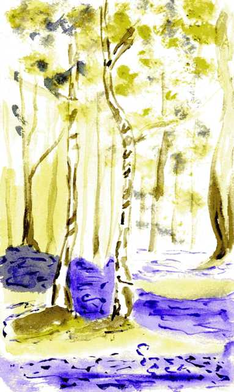
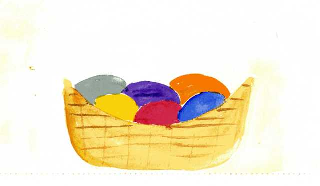
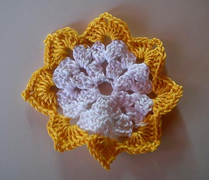

HP-FC – Ostereiersuche 2014-dev
Hufflepuff
Ostergedicht
Die Sonne hoch am Himmel steht,
der Wind den Pflanzen um die Nase weht.
Schau was sich da reckt und streckt,
der Blümchen ihre Köpfchen sind nicht bedeckt.
Gelb, lila, weiß und rot,
welch ein Farbangebot.
Frühlingsblumen kündigen es schon an,
auch die große Osterglocke ist schon dran.
Kinderlachen und Juchehen,
gleich wird es wohl los gehen.
Da sieht man ihn auch schon hoppeln,
den kleinen Hasen, mit seinen Stoppeln.
Hat er uns was mitgebracht,
das hat sich jedes Kind schon gedacht?
Auf die große Suche wird es gehen,
was wird wohl alles geschehen?
Es wird gesucht und geschaut,
und auch jeder hat sich da getraut.
Unter den Hecken und im Beet,
da kommt schon keiner zu spät.
Ja man versteckt hier feine Sachen zu diesem Feste,
und zwar in einem schön geschmücktem Osterneste.
Da hört man sie schon rufen:
"Eier, Hasen und auch Kuchen“
Und schon wurden sie entdeckt,
die bunten Eier waren in der Hecke versteckt.
Der lecke Hasenkuchen, der runde,
lag zwischen den Blumen, im Bunde.
Der Schokohase, der süße,
hatte keine Füße.
Drum stand er unterm Baum,
in einem grünen Ostertraum.
Alle Kinder war’n nun froh,
denn jeder hatte nun etwas aus Stroh.
Ein kleines schickes Osterneste,
zu diesem schönen Osterfeste.
Drum Kinder seid schön lieb und nett,
dann kommt der Osterhase auch zu eurem Bett.
Wenn ihr schlaft und noch träumt,
hat er das Osternest schon aufgeräumt.
Frohe Ostern
Osterhasen-Osternest
Was ihr braucht:
- Schere
- Kleber
- Klebeband
- Blumentopf (Bunt oder Braun)
- etwas festeres Bastelpapier (Bunt oder Brauntöne)
- Wasserfesten Stift
- Ostergras
Als erstes solltet ihr euch ein paar Schablonen aus fester Pappe anfertigen. Dazu zeichnet ihr ein großes Hasenohr und ein kleineres schmaleres Hasenohr auf eine Pappe und schneidet sie aus.
{{img src="../../img/ostern/2014/text/Bild2_Bastelanleitung_Hufflepuff.jpg"; alt="" class="left"}}Nun solltet ihr einen Bogen Bastelpapier wählen, ihr habt freie Wahl, entweder ihr stellt einen schlichten brauen Osterhasen her oder so wie ich einen bunten Osterhasen. Auf diesen Bogen malt ihr zwei große Ohren und schneidet diese aus. Auf einen anderen Bogen tut ihr das selbe mit den kleinen Ohren. Nun nehmt ihr ein großes und ein kleines Ohr und legt sie übereinander und klebt sie fest. Dies macht ihr auch mit dem zweiten Ohr. Als nächstes klebt ihr die Ohren mit Klebeband oder guten Kleber die Ohren an den Blumentopf. Jetzt hat euer Hase schon einmal ein paar Ohren.
Nun nehmt ihr euch einen Wasserfesten Stift und malt dem Hasen eine Nase, Barthaare und einen Mund.
Zum Schluss kommen nun noch die Augen hinzu, entweder weiß mit einer schwarzen Pupille oder eben bunte Augen. Ihr könnt auch hier eurer Fantasie freien Lauf lassen. Nun müsst ihr die Augen nur noch am Topf befestigen und fertig ist euer Osterhasen-Osternest.
Jetzt fehlen nur noch das Ostergras und natürlich der süße Inhalt.
{{img src="../../img/ostern/2014/text/Bild3_Bastelanleitung_Hufflepuff.jpg"; alt="" class="left"}}Viel Spaß beim Basteln und Befüllen.
Zauberhafte Osterhasen
Wieder war es Ostern geworden. Die Frühlingssonne kitzelte die Nasenspitzen der Hexen und Zauberer, welche sich auf den Weg gemacht hatten, um ein paar Einkäufe in der Winkelgasse zu erledigen. Einige waren allein, doch die meisten hatten ihre Familien mitgebracht und schlenderten zusammen mit Ehemann oder Kind durch die Gasse. Schließlich konnte man das schöne Wetter zugleich für einen Familienausflug nutzen. Hexe Lilli Löffelstiel, welche eine kleine Bäckerei in der Winkelgasse betrieb, beobachtete das rege Treiben. Jetzt zur Osterzeit hatte sie sich etwas Besonderes für die Zauberer ausgedacht und besonders für die Kinder. So hatte sie kleine Osterhasen gebacken und so verzaubert, dass diese fröhlich durch die Gegend hüpften und zu den Kindern hoppelten, um von diesen dann verzehrt zu werden. Inspiriert dazu wurde sie durch ein Rezept, welches sie von ihrer Urgroßmutter Hilde geerbt hatte. Es handelte sich hierbei um ein altes Muggel-Rezept, welches anleitete Quark-Öl-Teig Kaninchen zu backen.
Für 10 dieser Häschen benötigt man:
- 350 g Mehl
- 1 Päckchen Backpulver
- 150 g Magerquark
- 7 EL Milch
- 6 EL Öl
- 125 g Zucker
- 1 Päckchen Vanillin-Zucker
- 1 Ei (Größe M)
- 1 Eigelb (Größe M)
- Mandelstifte, Rosinen, buntes Schleifenband und Glöckchen zum Verzieren
- Mehl für die Arbeitsfläche
- Backpapier
Mehl, Quark, Backpulver, 6 Esslöffel Milch, Öl, 75g Zucker, Vanillin-Zucker und ein Ei werden in eine große Rührschüssel gegeben und mit dem Knethaken zu einer glatten Masse vermengt. Eigelb und 1 Esslöffel Milch werden separat verquirlt. Der geknetete Teig wird auf einer, mit Mehl bestreuten Arbeitsfläche ca. 0,5 mm dick ausgerollt und mit einer Hasenform ausgestochen.
Da Lilli keine solche Form zur Hand hat, schnitt sie sich mit Hilfe ihres Zauberstabes selbst Hasenformen aus Pappe zurecht, welche sie als Schablone nahm.
Die ausgestochenen Kaninchen werden auf ein Backblech, welches mit Backpapier belegt ist, gelegt und mit der Eigelb-Milch-Mischung bestrichen.
Anschließend werden sie mit Mandelstiften als Bart und Rosinen als Augen verziert und bei 150° Umluft für 15-20 Minuten gebacken.
Direkt danach werden sie mit der Oberseite in 50g Zucker gewendet und zum Abkühlen auf einen Kuchenrost gelegt, bevor sie letztendlich mit Schleifenband und Glöckchen verziert werden.
Lilli hat Ihnen am Ende einen Bewegungszauber verpasst, denn ein wenig sollen sich die Hasen von denen der Muggel unterscheiden. Und da sie sehr gut gelaunt war und der Frühling nahte, backte sie auch noch ein paar Frösche und Enten, welche sie in ihrer kleinen Bäckerei verkaufte. Und so konnte sie ein wenig Osterstimmung in die Winkelgasse bringen und den vielen Zaubererkinder eine kleine Freude machen. Denn schließlich staunten diese nicht schlecht, wenn ein zauberhafter Osterhasenkuchen zu ihnen hoppelte, um anschließend vernascht zu werden.
Quelle für das RezeptZauberhafte Ostereiersuche
Sam und Fiona stapften durch den Laubwald. Überall lagen alte, trockene Blätter, zwischen denen mehr oder weniger mutig ein paar Frühjahrsblumen ihre Köpfe herausstreckten. In ganz besonders kalten, schattigen Mulden schmolzen die letzten Schneereste in der Frühlingssonne. Die beiden Zwölfjährigen lachten und waren guter Dinge – das Projekt "Ostereiersuchen wie die Muggel" hörte sich gut an. Es hatte einige Zeit gebraucht, bis sie ihren Eltern überhaupt verständlich machen konnten, was sie in der Schule von den Mitschülern erzählt bekommen hatten und nochmal zwei Tage, bis sie Fionas Eltern überzeugt hatten, Osternester für sie zu verstecken. Schlussendlich jedoch konnten sie jetzt, am Ostersonntag, zusammen durch den Wald streifen und nach Schokoladeneiern suchen. Zumindest war das die Beschreibung der Freunde gewesen: ein kleines Körbchen, ausgepolstert mit Gras und voll gefüllt mit Schokoladeneiern, Nougat und Hasen, ebenfalls aus Schokolade.
Sam und Fiona waren in Zaubererfamilien groß geworden, wo dieser Brauch unbekannt war. Erst in Hogwarts hatten sie davon gehört, von den Mitschülern, die bei Muggel aufgewachsen waren. Tolle Geschichten gab es da zu hören, von kreativen Verstecken, stundenlanger Suche und natürlich dem großen Berg leckerer Süßigkeiten. Echte Hasen, ganz aus Schokolade! Eier, so groß wie Hühnereier, gefüllt mit Nougat oder Marzipan! Sam verbrachte diese Ferien bei seiner alten Kindergartenfreundin. Stundenlang hatten sie den Eltern in den Ohren gelegen und in den buntesten Farben zu schildern versucht, was sie von den anderen wussten. Die beiden lachten. Die lange Überzeugungsarbeit hatte sich gelohnt!
Ihre Zauberstäbe lagen natürlich fein säuberlich in den Schulkoffern. Solange sie nicht auf dem Schulgelände waren, durften sie sie sowieso nicht benutzen, außerdem hätte es den ganzen Spaß verdorben. Es ging schließlich um die Suche, nicht um ein erfolgreiches "Accio Osternest!". Doch wo waren sie? Aufmerksam streiften die Blicke zwischen den Bäumen hindurch, unter Reisighaufen und in Baumhöhlen. Einmal war Sam sogar bis hoch in die Zweige einer Buche geklettert, weil er meinte, einen Farbfleck in der Astgabel zu sehen; dabei hatte er aber nur einen dösenden Buntspecht aufgeschreckt. Der einzige Hinweis des Vaters, und gleichzeitig eine Anweisung an die es sich zu halten galt, war gewesen: "Bleibt am Weg".
"Wenn das so weitergeht", knurrte Fiona, "landen wir am Weiher!" Die Bäume lichteten sich bereits und zwischen den Stämmen blitzte es ab und zu. Das war das Sonnenlicht, das auf der Wasseroberfläche tanzte. Etwas weniger aufmerksam als bisher schlenderten die Kinder den Trampelpfad entlang und freuten sich auf eine kurze Pause am hellen Ufer. Dort, zwischen Schilf und Weiherbirken, war ihr Lieblingsplatz. Oft hatten sie hier gespielt, geplanscht und das Leben genossen. Außerdem gab es nicht mehr viele Möglichkeiten, wenn sie dort angekommen waren, denn hier endete der Weg.
Gerade, als Sam sich ins weiche Moos fallen lassen wollte, entdeckte er etwas im Schilf. "Da schau mal! Meinst du, das könnte es sein?" "Oh oh", seufzte Fiona, "ist dir klar, dass meine Eltern ihre Zauberstäbe dabei hatten? Das ist ganz schön weit draußen und das Wasser ist noch eiskalt! Manchmal haben sie einen anstrengenden Humor."
Tapfer zogen die beiden Schuhe und Socken aus und schoben die Hosenbeine so weit nach oben wie möglich. Vermutlich würde es nicht reichen, denn der Boden war hier voll Schlamm und sehr nachgiebig. Zähneknirschend wateten sie los.
Es war ein Osternest – doch die Überraschung kam aus dem Hinterhalt. Mit wildem Zischen und Flügelschlagen stob ein Vogel auf sie zu. Vor Schreck wäre Sam fast im Wasser gelandet, sein Schrei hallte durch den Wald: "Was macht denn diese Wildgans hier?!" Fiona, die sich schneller wieder gefangen hatte, lachte laut auf. "Das war keine Wildgans, sondern eine Ente. Offenbar hat sie beschlossen, deine Schokoladeneier auszubrüten."
Gar nicht weit entfernt, auf einem Stein im Schilf, entdeckten sie schließlich das zweite Nest. Als Fiona es hochhob, hätte sie es fast sofort wieder fallen gelassen. Mit einem energischen "Quak quak!" sprang der Frosch über ihre Schulter und landete platschend im Wasser. Dieses Mal war Sam am kichern: “Er wollte sich vielleicht mit deinen Schokofröschen anfreunden..."
Bester Laune setzten sich die Kinder mit ihrem Fund in die Sonne, um vor dem Heimweg ihre Füße trocknen zu lassen. Neugierig inspizierten sie die Nester und ihren Inhalt: tatsächlich hatten Fionas Eltern hühnereigroße Schokoladeneier aufgetrieben. Die Hasen fehlten, dafür gab es Heringe aus lila Marzipan und Berti Botts Bohnen aller Geschmacksrichtungen.
Erst am Nachmittag kehrten die beiden nach Hause zurück. Von diesem Tag würden sie viel zu erzählen haben in Hogwarts! Eine echte Ostereiersuche, mit der sie angeben konnten! Herrlich. Kurz vor dem Einschlafen griff Sam noch einmal in sein Nest und knabberte versuchsweise an einem der Marzipanheringe. Murrend verzog er das Gesicht und jammerte: "Fiona, deine Eltern sind gemein. Die Dinger schmecken nach Seife!"
Look good, feel good
Clementine Blye, Inhaberin des angesagten Klamottenladen "Come In, Look Good" in der Winkelgasse, öffnete auch am Ostersamstag wie an jedem anderen Tag ihren Laden fröhlich pfeifend. In Gedanken zog sie per Hand an der Jalousie, die ihr Geschäft neben verschiedenen Schutzzaubern vor unbefugtem Eindringen schützen sollte. Sie genoss den strahlenden Sonnenschein und musste lächeln. Ihr Laden war ihr Ein und Alles und erstrahlte in fröhlichen Farben. Schon vor einigen Tagen hatte sie die Osterdekoration im Schaufenster verteilt, sodass nun neben Ostereiern auch einige Hasen und Kaninchen durch ihr Schaufenster hoppelten. Durch einen kleinen Zauber konnten sie natürlich nicht den Laden verwüsten oder entkommen.
Innerhalb weniger Minuten war ihr Geschäft mal wieder gefüllt mit vielen Menschen. Vor allem junge Hexen und Zauberer, die sich mühelos in der Welt der Muggel bewegen wollten, besuchten ihren Laden. Im Gegensatz zu normalen Klamottenläden der Muggel verfügten ihre Klamotten über einige kleine, magische Besonderheiten, die für die Augen der Muggel unsichtbar waren. Das Angebot war sehr vielseitig und für jeden Geschmack etwas dabei. Inspiriert wurde Clementine von angesagten Designern der Muggel, besonders die XXL-Modedesignerin Irma Mahnel war ihr großes Vorbild.
In diesem Moment betrat Victoire Weasley, genannt Vikki, den Laden. Ein fast unsichtbares Leuchten schien von ihr auszugehen. Clementine musste sich ein Grinsen verbeißen. Victoire war eine Stammkundin und zudem noch eine ihrer besten Freundinnen. "Hallo, Süße", wurde Clementine dann auch gleich von Victoire begrüßt und stürmisch umarmt. "Ich brauche unbedingt noch ein Outfit für morgen. Das große Weasley-Osteressen findet dieses Jahr bei uns statt und ich will natürlich besonders hübsch aussehen, du verstehst?!" Verschwörerisch zwinkerte Vikki Clementine zu. Diese lachte laut auf. "Ja klar, für deine Familie willst du natürlich hübsch aussehen, ich verstehe. Ich weiß genau für wen du dich so schön machen willst und sein Name ist garantiert nicht Weasley."
{{img src="../../img/ostern/2014/text/Bild_Geschichte2_Hufflepuff.jpg"; alt="" class="left"}}Vikki musste ebenfalls lachen. "Du hast natürlich Recht. Teddy ist einfach toll und ich will ihn ordentlich beeindrucken. Das Outfit, was ich anziehe, muss ihn einfach umhauen." "Ich glaube, ich habe hier das perfekte Outfit für dich." Clementine reichte Vikki ein atemberaubendes lilafarbenes Kleid herüber. "Wow, das ist mal der Hammer. Ich ziehe es gleich mal an." Mit diesen Worten entschwebte Vikki Richtung Umkleide. Nach wenigen Augenblicken war sie zurück und Clementine stockte der Atem. Es sah an Vikki noch tausendmal besser aus als am Haken. Vikki strahlte. "Ich nehme es. Es sieht echt sowas von toll aus. Damit werde ich Teddy auf jeden Fall beeindrucken. Du kommst doch morgen auch, oder?" Clementine nickte. "Natürlich, ich würde mir das Osteressen bei euch doch nicht entgehen lassen. Wir sehen uns morgen."
Nach einem ereignisreichen Tag schloss Clementine ihr Geschäft abends mit einem guten Gefühl ab. Die Feiertage brachten die Menschen immer in Kauflaune und sie hatte einige ihrer schönsten Kleidungsstücke verkaufen können. Sie war mit sich zufrieden und freute sich auf den nächsten Tag bei der Familie Weasley.
Der Ostersonntag begann wie schon der Tag zuvor mit strahlendem Sonnenschein und Vogelgezwitscher. Clementine war früh unterwegs, um noch einige Kleinigkeiten für das Fest bei den Weasleys zu besorgen. Sie hielt bei ihren Besorgungen immer wieder inne und beobachtete die Leute in der Winkelgasse. Auch an einem Feiertag waren hier einige Menschen unterwegs und Clementine fragte sich bei jeder Person, der sie ins Gesicht blickte, wer sie war, was sie heute machen würde. Eine ältere Dame zockelte langsam die Straße entlang und blickte sich immer wieder um. An einer Bank blieb sie stehen und setzte sich hin, um zu verschnaufen. Dann sah Clementine eine Familie mit zwei Kindern, die Winkelgasse entlang laufen. Während Mutter und Vater Arm in Arm immer noch glücklich verliebt wirkten, tollten die beiden Kinder um sie herum und plapperten in einer Tour. Clementine musste lachen. So etwas wünschte sie sich auch…später einmal. Jetzt machte sie sich erst einmal auf den Weg zu den Weasleys und zu einer ganz anderen Art Familie. Und sie war gespannt wie Vikki mit ihrem Kleid glänzen würde.
Slytherin
Ostern im Paradies?
"Endlich Ferien!" Glücklich seufzend ließ Graham sich ins Flugzeug sinken, das ihn und seine Familie nach Frankreich bringen würde, in einen herrlichen Osterurlaub, den sie hoffentlich genießen würden. Die Ferien versprachen vielseitig zu werde, das Hotel XXL und sein Vater würde wahrscheinlich seine ölgemälde-Sammlung aufstocken können. Schließlich waren sie Reinblüter, eine hoch angesehene Zaubererfamilie, da gab es nur das Beste!
Zufrieden vertiefte er sich in eine Broschüre über ihren exklusiven Urlaubsort, der garantiert muggelfrei war und über jeden erdenklichen Luxus verfügte. Das Heft war voll mit bunten Bildern vom klaren Meer, Palmen und kilometerlangen Sandstränden. Ganz in seiner Träumerei versunken, döste Graham schließlich ein.
Er meinte im Traum schon das Rauschen des Meeres zu hören als er geweckt wurde. Das Flugzeug war gelandet und jetzt war es an ihm, nach alter Reinbluttradition, seine Mutter nach draußen zu begleiten. Die Broschüre hatte nicht zu viel versprochen, der salzige Wind wehte durch sein Haar und schüttelte sacht die Palmen. Das magisch gesteuerte Taxi erwartete sie schon und als kleiner Osterspaß saß ein Osterhase als Fahrer auf dem Sitz.
Schon nach einer erstaunlich kurzen Zeit stand Graham mit seinen Eltern in ihrer luxuriösen Suite. Hastig suchte er seine Badesachen und machte sich auf den Weg zum Strand, wo er sich sofort in das klare Wasser stürzte. Nachdem er sich ausgiebig abgekühlt hatte, setzte er sich an die kleine Strandbar. Als wenige Minuten später jemand ein Glas vor ihm abstellte und er nach oben blickte, sah er ein hübsches blondes Mädchen, das er als etwas jünger als er selbst einschätzte. Er fand sie auf Anhieb sympathisch, fast anziehend.
Als er nach einer rauschenden Party endlich in seinem Bett lag, flimmerte das Bild des Mädchens immer noch vor seinen Augen und er nahm sich fest vor sie am nächsten Tag anzusprechen.
Beim Frühstück am nächsten Morgen dachte er immer noch an das Mädchen, es kam ihm selbst schon lächerlich vor, dass er so von jemandem schwärmte, den er gerade mal einige Sekunden lang gesehen hatte. Doch er freute sich auf einen der Höhepunkte ihres Urlaubs, eine Fahrt auf einer Yacht, passend zu Ostern mit inklusiver Ostereiersuche. Als Graham elegant an Bord ging, konnte er sein Glück kaum fassen: SIE war da. Und tatsächlich ergab sich die Gelegenheit ein bisschen mit dem Mädchen zu flirten, so fand er heraus dass sie Chiara hieß und hier jobbte.
Nach dem Ausflug hatte Chiara Feierabend und sie trafen sich am Strand bei einem Spaziergang, und während mit geradezu perfektem Timing die Sonne unterging, küssten sie sich zum ersten Mal. Als Graham, nachdem er Chiara nach Hause gebracht hatte, in seinem Bett lag, drängte sich eine unangenehme Erinnerung in sein Glücksgefühl. Denn gleich zu Beginn hatte Chiara erwähnt, dass sie muggelstämmig war, und nur wegen ihres Jobs an diesem Ort sein konnte.
Was sollte er nur tun? Er war der Erbe einer reinblütigen Familie, er konnte sich nicht einfach so in eine Muggelstämmige verlieben. Sollte er vielleicht mal mit seinen Eltern darüber reden? Nein, ausgeschlossen. "Du trägst Verantwortung! .... Du bist ein Reinblut! ... Sie ist unwürdig! ... Hässlich, ihre Nägel sind unlackiert!... Schlag sie dir aus dem Kopf!" So ungefähr würde das Gespräch ablaufen. Er seufzte resigniert, er konnte, wollte sie nicht verlassen, er war so verliebt!

Am nächsten Tag traf Graham sich erneut mit Chiara, aber er war deutlich geknickt. Als Chiara ihn darauf ansprach, schüttete er ihr sein Herz aus. Für einen kurzen Moment war ihm, als fiele ihm ein ganzer Berg vom Herzen, bis er aufsah. Entsetzt starrte Chiara ihn an. "Ist das dein Ernst? Dir ist das so wichtig?" "Nein... doch... keine Ahnung", stotterte er los. "Weißt du, eigentlich habe ich mich nie mit Schlamm-... Muggelstämmigen abgegeben. Aber seit ich dich kenne - ist das anders. Bitte, glaub mir!" Verzweifelt versuchte er, sie zu überzeugen. "Graham, du musst dich entscheiden! Entweder du stellst mich deinen Eltern vor und legst diese bescheuerte Denkweise ab, oder du gehst und führst das perfekte Reinblutleben!" Eine gefühlte Ewigkeit schaute Graham in Chiaras tränengefüllte Augen, bis er schließlich wortlos aufstand, in sein Hotel ging und den Rest seines Lebens versuchte, das hübscheste, tollste Mädchen, dass er je kennengelernt hatte, zu vergessen.
Titel
Häkelschmetterling
Für deinen kleinen Schmetterling brauchst du Wollreste in zwei Farben und eine Häkelnadel, die zum Garn passt. Je feiner die Wolle, desto kleiner die Nadel. Welche Nadel du brauchst, kannst du für gewöhnlich auf der Banderole der Wolle nachlesen, wenn du sie noch hast. Als Anfänger würde ich aber nicht kleiner als mit einer Häkelnadel der Größe 2 oder 3 arbeiten.
Für die Schmetterlinge werden zuerst achtblättrige Blüten in Runden gehäkelt. Am Ende werden diese Blüten zusammengeklappt und mit einer Luftmaschenkette zusammengehäkelt.
Und so geht's:
Runde 1:
Zuerst häkelst du mit dem helleren Garn acht Luftmaschen. Aus dieser kleinen Kette machst du nun einen Ring, indem du in die erste Luftmasche eine Kettmasche häkelst.

Runde 2:
Jetzt geht es mit Stäbchen weiter. Zuerst häkelst du noch mal 2 Luftmaschen, die als erstes Stäbchen zählen. Dann häkelst du in die erste Luftmasche des Rings 2 Stäbchen und machst anschließend 3 Luftmaschen. In die nächste Luftmasche des Rings häkelst du nun 3 Stäbchen und danach wieder 3 Luftmaschen. Das wiederholst du bei jeder Luftmasche der ersten Runde, bis du wieder bei der ersten Masche angekommen bist. Dann schließt du die Runde mit einer Kettmasche in obere der beiden Luftmaschen von Anfang der Runde.
Runde 3:
In dieser Runde werden die Stäbchen in die Luftmaschenketten aus Runde 2 gehäkelt. Das bedeutet, dass du nicht wie sonst mit der Nadel durch die Luftmaschen durchstichst, um den Faden zu holen, sondern ihn einfach unterhalb der Luftmaschenkette durchholst. In die beiden ersten Stäbchen der vorherigen Runde häkelst du je eine Kettmasche. Dann häkelst du in jeden Luftmaschenbogen 3 Stäbchen, 3 Luftmaschen und noch mal 3 Stäbchen, also insgesamt 8 Mal. Am Ende schließt du die Runde mit einer Kettmasche ins obere Ende des ersten Stäbchens. Dann schneidest du den Faden ab und ziehst ihn durch die Kettmasche.

Runde 4:
Jetzt ist die 2. Farbe an der Reihe. Du machst eine Anfangsschlaufe und häkelst dann eine feste Masche an die Stelle, an der du in der letzten Runde die Kettmasche gemacht hast. So fixierst du die neue Farbe. Anschließend häkelst du in jeden Luftmaschenbogen 5 Stäbchen, 3 Luftmaschen und nochmal 5 Stäbchen. Am Ende der Runde machst eine Kettmasche in die feste Masche vom Anfang, schneidest den Faden ab und ziehst ihn durch.
Jetzt vernähst du alle Fäden. Ist das geschafft, kannst du deine Blüte schon einmal in der Mitte zusammenfalten, um einen ersten Eindruck deines fast fertigen Schmetterling zu erhalten.
Jetzt nimmst du wieder das erste Garn und machst eine Kette aus 15 Luftmaschen. Diese Kette legst du nun um den gefalteten Schmetterling und machst eine Kettmasche in die 6 Masche der Kette (von Anfang gezählt). Anschließend häkelst du noch 5 weitere Luftmaschen, dann schneidest du den Faden ab und ziehst ihn durch die letzte Masche. Die Fadenenden an den beiden Fühlern solltest du noch vorsichtig ein wenig vernähen.
Jetzt ist dein Schmetterling fertig.
Für diese Art Schmetterling lassen sich auch andere Blütenformen verwenden. Vielleicht hast du ja schon andere Blüten gehäkelt, die du hierzu ausprobieren kannst.

Viel Spaß beim Ausprobieren.
Luftmasche: Mache eine Schlaufe und stecke die Häkelnadel in die Schlaufe. Um Luftmaschen zu häkeln ziehst du einfach den Faden mit dem Haken durch die Schlinge auf der Nadel.
Kettmasche: Mit der Nadel durch die Masche stechen, den Faden holen und in einem Rutsch durch die Masche und durch die Schlinge auf der Nadel ziehen.
feste Masche: Mit der Nadel durch die Masche stechen, den Faden holen. Jetzt hast du zwei Schlingen auf der Nadel. Dann den Faden mit dem Haken durch beide Schlingen ziehen.
Stäbchen: Lege den Faden einmal um die Häkelnadel. Jetzt stichst du durch die Masche und holst den Faden durch. Du hast jetzt drei Schlingen auf der Nadel. Dann ziehst du den Faden mit der Häkelnadel durch zwei dieser Schlingen und hast nur noch zwei Schlingen auf der Nadel. Durch diese beiden Schlingen ziehst du jetzt noch einmal den Faden.
Quark-Hefe-Hasen
Was benötigt ihr?
- 500g Mehl
- 125g Zucker
- 125g weiche Butter oder Margarine
- 125g Quark
- 100 ml Milch
- 2 Eier
- 1 Würfel Hefe
- 1 TL Zitronensaft
- eine Prise Salz
Zubereitung
Gebt alle oben genannten Zutaten in eine große Schüssel und vermengt es miteinander. Am besten funktioniert dies, wenn ihr einen Handmixer mit Knethaken verwendet. Wenn ihr nach einigen Minuten Rühren einen gleichmäßigen Teig habt, formt ihr diesen mit geölten oder gemehlten Händen zu einer Kugel und legt diese wieder in die Schüssel.Den Teig 30 Minuten gehen lassen.
Anschließend müsst ihr den Teig ein weiteres Mal durchkneten. Dann formt ihr für jeden Hasen aus dem Teig eine Wurst, die ihr zu einer Schnecke rollt. Das ist der Körper eures Hasen. Für den Kopf formt ihr aus dem Teig ein Oval, das ihr an einer Seite mit einem Messer einschneidet und klebt es an den Körper des Hasen. Nun nur noch eine kleine Kugel für den Schwanz rollen und euer Hase sollte aussehen wie auf den Fotos.

Nun drückt ihr nur noch je eine eine Rosine als Auge in den Teig. Wenn ihr wollt, könnt ihr die Hasen abschließend mit einer Mischung aus einem Eigelb und etwas Milch bestreichen, damit sie nach dem Backen einen schönen Glanz haben.
Die Hasen müssen bei 180°C Ober-/Unterhitze (vorheizen!) etwa 15-20 Minuten backen.

Viel Spaß und guten Appetit!
Gryffindor
(Un)Magische Ostern
Obgleich Caractacus Burke bereits ein stattliches Alter erreicht hatte, nahm er nach wie vor regen Anteil am Wohlergehen seines Geschäfts. Eine Angewohnheit, die ihm schon so manches Mal die Sorgenfalten in die Stirn getrieben hatte. Vor allem in letzter Zeit musste er feststellen, dass immer weniger Menschen Borgin & Burke's einen Besuch abstatteten und die Einnahmen sanken und sanken. Doch was sollte er dagegen tun? Eine Idee musste her, eine Geschäftsidee, ein besonderes Event, eine ... Anpassung an die Wünsche seiner Kunden bei gleichzeitiger Wahrung der dunklen Identität. Ein Osterwettbewerb!
Fünf Wochen später, Ostersonntag. Dichte Nebelschwaden durchzogen die Straßen der Nokturngasse und umhüllten die drei Jugendlichen, die sich vor einem Haus eingefunden hatten, das gut und gern als Spukhütte in einem Gruselfilm hätte Verwendung finden können. Es war sieben Uhr morgens und sie hatten eine Mission. Vor einem Monat hatte das Geschäft Borgin & Burke's einen Wettbewerb ausgeschrieben, der dem Gewinner selbst und allen Angehörigen eine lebenslange Premiummitgliedschaft garantierte. Der Clou: Finde das im Haus versteckte Osterei zuerst. Ohne Magie!
Zusammen mit seinem Hausgefährten Graham Pritchard betrat der Slytherin-Schüler Malcolm Baddock nun die Eingangshalle des Gebäudes, dicht gefolgt von Stewart Ackerly, einem findigen Ravenclaw; und obwohl die drei Jungen sonst nicht viel verband, spürten sie doch eine seltsame Einheit, als sie nun auf der Suche nach dem Ei allein und verlassen in den stillen, staubigen, düsteren Räumen standen. Sie schauten hinter jedes Ölgemälde, in und unter jeden Schrank, sogar in die vermoderten, unlackierten und ließen auch die halb zerfetzen Jalousien nicht unbeachtet. Doch trotz ihrer Mühen war das Ei auch nach einer Stunde noch nicht gefunden. War es am Ende unsichtbar oder metaphorisch? Das Ei als Symbol des Zusammenhaltes, den die drei Jungen angesichts ihrer schwierigen Aufgabe zeigen würden? "Nein", dachte Malcolm Baddock. "Das passt nicht zu Burke." Immerhin hatte er von seinem Vater einiges über diesen Mann gehört. Gelassen zog er eine Clementine aus seiner Tasche und begann, sie seelenruhig zu schälen, während die anderen beiden weitersuchten. Sie hasteten von Raum zu Raum, während Malcolm seinen Verstand rasen ließ. Ihm kam da so eine Idee.
Inzwischen hatte sich der Nebel verzogen und ein leichter Nieselregen hatte eingesetzt. In einem Tiergeschäft, nicht weit entfernt vom Haus, konnte man einen Frosch quaken hören. Mit Schweiß auf der Stirn kam Graham Pritchard zurück in die Eingangshalle. Er sah erschöpft und ein wenig säuerlich aus. "Hätte ich nur meinen Hektor mitgenommen", sagte er. "Der hätte dieses verfluchte Ei sofort gefunden. Die schlauste Ente Großbritanniens. Und eine Spürnase. Das sag ich dir. Wenigstens ist es nach dem ersten Schreck nicht mehr besonders gruselig hie..." Das letzte Wort blieb ihm förmlich im Hals stecken, als aus einem angrenzenden Raum plötzlich ein Rattern und Poltern an ihre Ohren drang. Stewart, der überzeugt davon war, dass es das Ei sein musste, das schlussendlich von selbst seinen Aufenthaltsort verriet, sprintete los, sah sich im Raum um und öffnete die ratternde Schublade, der eine seltsame Substanz entwich, die nach dem Bruchteil einer Sekunde die Form einer überdimensionalen Schlange annahm. "Oh nein! Ein Irrwicht!" Alle Vorsicht war vergessen. Panisch schnappte er seinen Zauberstab und schrie dem Wesen regelrecht ins Gesicht: "Riddiku-muss - Ridddiku-kuss - Riddiku-schluss." Doch zu diesem Zeitpunkt hatten die anderen beiden bereits auf dem Absatz kehrtgemacht.
Es war der größte Triumph im bisherigen Leben des Malcolm Baddock. Stolz wie Salazar entstieg er dem
Gruselhaus und hielt ein Ei in die Höhe. Der derzeitige Assistent von Borgin & Burke's, der sich
inzwischen eingefunden hatte, um den Sieger zu beglückwünschen, staunte nicht schlecht. Pink mit
roten Herzen? Was war denn im Laufe der Zeit in den alten Burke gefahren? Wie dem auch sei. Preise
wurden verteilt, lobende Worte gesprochen, die Eltern waren stolz auf ihren Jungen, bis zu dem Zeitpunkt
... als das Ei plötzlich Beine bekam, dann Arme, Füße, das Gesicht des Graham Pritchard, der, noch halb Ei,
schuldbewusst sprach: "Mist, ich glaube, der Zauber lässt nach."
MagischeOstern_Taurus.JPG)
Es war das größte Gelächter, das die Nokturngasse jemals gehört hatte. Ein profitables jedoch, denn Borgin & Burke's waren nun in aller Munde und so hatte sich die Suche zumindest für sie gelohnt.
Florean Fortescue
Florean Fortescue war etwas nervös. Zwar wiederholte sich Ostern jedes Jahr wieder, doch dieses Jahr war es trotzdem etwas Anderes. Denn Florean hatte sich etwas Spezielles ausgedacht. In seinem Eissalon sollte ein Osterfest mit stimmiger Osterdekoration stattfinden. Dazu wollte er spezielle Eissorten herstellen. Um sich zu inspirieren, machte Florean sich auf den Weg in die Muggelwelt. Die sogenannten Kaufhäuser hatten lange vor Ostern die Verkaufsflächen mit ihren Dekorationen geschmückt. Da diese durchaus manchmal zu gebrauchen waren, wollte er sich hier Ideen holen. Florean hoffte, nicht allzu sehr aufzufallen, hatte er sich doch bei der Kleiderwahl besondere Mühe gegeben. So stand er nun also im Frack mit seinen grünen Hosen und dem gelben Hemd in einem großen Kaufhaus. Die Osterabteilung hatte er durch mehrmaliges Nachfragen gefunden und schaute sich nun genau die Sachen an. Nachdem er die vielen toten Küken- und Häschenfiguren angeschaut und sich beim Verkäufer erkundigt hatte, ob man den armen Tieren nicht doch noch helfen könne, ging er mit vielen Eindrücken und komischen Gefühlen wieder zurück in die Winkelgasse. Florean konnte einfach nicht verstehen, warum ihn der Verkäufer verständnislos und so komisch von Kopf bis Fuß gemustert hatte. Eine Woche vor Ostern nutzte Florean seinen freien Tag und machte sich daran, eine Liste mit allen benötigten Materialien zu erstellen. Nachdem er alles aufgeschrieben hatte, war er doch erstaunt, dass es so viel für ein Osterfest brauchte. Dennoch besorgte er gleich die Sachen und machte sich voller Tatendrang ans Dekorieren. Da fanden Osterzweige, verschiedenfarbige Eier, bunte Ballons, kleine Küken und auch hüpfende Häschen ihren Platz im Eissalon. Die Küken stolzierten auf den kleinen Tischen herum und die Häschen spielten im ganzen Eissalon Verstecken.
Florean seufzte. Jetzt musste er erst noch den Kleinen Manieren beibringen, sonst konnte er morgen unmöglich wieder den Laden öffnen. So trommelte er die ganzen Osterdekorationen zusammen und gab ihnen genaue Instruktionen. Zum Glück waren sie relativ pflegeleicht, benahmen sich dann ganz artig und Florean konnte sich etwas ausruhen. An den nächsten Tagen zog die Dekoration bereits mehr Gäste als sonst an und Florean genoss den Rummel um seinen Eissalon. Doch die Vorbereitungen waren noch längst nicht abgeschlossen und so verbrachte Florean jeden Tag nach Feierabend noch viele Stunden in seiner Küche. Als Höhepunkt hatte er sich eine ganz spezielle Attraktion ausgedacht und dafür galt es, noch genug zu üben. Seine Eiskugeln sollten am Ostersonntag nämlich nur die Form von Eiern annehmen. Außerdem hatte er sich einen ganz besonderen Wettbewerb ausgedacht: Jeder sollte probieren können, sich selbst das farbenfroheste und vielseitigste Eis zusammenzustellen. Die Bedingungen dafür zu schaffen, war gar nicht so leicht und so verging die Woche wie im Fluge.

Am Ostersonntag wachte Florean sehr früh auf. Aufgeregt stand er bereits Stunden vor der Ladenöffnung
im Eissalon und kontrollierte mehrere Male jedes kleinste Detail. Als er endlich öffnen konnte, rauschte
eine große Menge Gäste hinein und im Nu war Florean mitten im Geschehen. Die Kinder amüsierten sich über
die Küken, die lustig durcheinander kugelten und die Jugendlichen machten sich einen Spaß daraus, den
Häschen hinterherzulaufen. Floreans neue Eissorten und die Ei-Form kamen bei den Gästen super an und
er war stolz auf seine geniale Idee. Dann war es endlich soweit und Florean konnte den Wettbewerb
anpreisen. Beim Vielseitigkeitswettbewerb sollten die Gäste die speziellsten Kombinationen der Eissorten
zusammenstellen. Die Stimmung war heiter und von Quark-Vanille-Schokolade bis Walnuss-Zitrone-Himbeere
war alles dabei. Bei dem ganzen Durcheinander konnte Florean dann aber beim besten Willen keinen Sieger
küren, da die Kombinationen einfach zu unterschiedlich waren. Da gab er lieber allen Teilnehmern ein
Gratiseis aus. Schließlich konnte er gegen Ende des Tages seinen Eis-Berg präsentieren, eine XXL-Eiskugel
in Eiform, an dem er die ganze Woche gearbeitet hatte. Natürlich hatte er dazu das Eis länger haltbar
gemacht. So konnten die Gäste an diesem Abend - Florean hatte heute seine Öffnungszeiten verlängert -
begeistert zuschauen, wie Florean das Eis direkt vom Eis-Berg servierte. Dabei passten sich Geschmack
und Farbe immer den Wünschen der Gäste an.
Nach einem langen Tag fiel Florean Fortescue schließlich überglücklich ins Bett und freute sich schon auf das nächste Osterfest. Denn dieses Fest wollte er unbedingt wiederholen, da war er sich sicher.
Frühjahrserinnerungen
Januar
Vor einem Jahr war alles anders,
da irrten wir noch wirr umher,
Horkruxe suchend, Freunde vermissend, Menschen beweinend
und das Herz war uns schwer!
Februar
Vor einem Jahr war alles anders,
da war das Ende noch fern,
Horkruxe suchend, Freunde vermissend, Menschen beweinend
und die Seel' ohne Kern!
März
Vor einem Jahr war alles anders,
da schien das Ende schon nah,
in Gefangenschaft seiend, den Tod von Grindewald erfahrend, den frechen Grabfrevel beklagend,
und Dobby nie mehr da!
April
Vor einem Jahr war alles anders,
war vieles unwirtlich und kahl,
Horkruxe suchend, Freunde vermissend, neues Leben begrüssend:
ein kleiner Lupin wie ein Frühlingssonnenstrahl!
Mai
Vor einem Jahr war alles anders,
von Ostern keine Spur!
Kämpfe und Schreien, Tränen und Klagen, Sieg und Leere
von Ostern keine Spur!
von Ostern keine Spur!
Ein Jahr danach
Vor einem Jahr war alles anders,
aber nun seh' ich das Licht
das Eis um die Herzen vertreibend, die Wolken im Gemüte verschwindend,
das Lächeln der Lippen aufscheinend,
und die Botschaft von Ostern aufbricht!

Cremige Erdbeer-Biskuit-Schnittchen
Zutaten für ca. 20 Stück:
- 5 Eier
- 150 g Zucker
- 2 Päckchen Vanillezucker
- Prise Salz
- 150 g Mehl
- 1 TL Backpulver
- 500 ml Schlagsahne
- ca. 1/2 Packung à "Torten-Creme Erdbeer-Sahne" von Dr. Oetker
- Dekofiguren nach Wahl
1. Die Eier mit 7 EL kaltem Wasser, dem Zucker, Vanillezucker und dem Salz aufschlagen. Danach das gesiebte Mehl mit dem Backpulver unterrühren und so lange rühren, bis der Teig kleine Blasen schlägt. Die Masse schließlich auf ein mit Backpapier ausgelegtes Blech streichen und bei 225 °C 10-12 Minuten backen.
2. Den fertigen Biskuitteig auf ein mit Zucker bestreutes Handtuch stülpen und vorsichtig (im warmen Zustand) das Backpapier abziehen. Den Teig halbieren und schließlich etwas abkülen lassen.
3. Die Schlagsahne anschlagen und, je nach Empfinden, ca. 1/2 Packung Torten-Creme Erdbeer-Sahne hinzugeben (zwischendurch probieren, die Menge kann je nach Vorliebe variieren). Die Masse schließlich steif schlagen, die Creme auf einem der beiden Biskuitteige verteilen und glatt streichen. Lediglich einen kleinen Klecks für das Ankleben der Deko übrig lassen. Die andere Platte schließlich darauf setzen und 45 Minuten kalt stellen.
4. Mit einem scharfen, langen Messer entweder Quadrate, Eier, Blumen oder sonstiges ausschneiden. Mit der restlichen Sahnemasse die Dekofiguren auf den Schnittchen/Eiern festkleben. Nach Belieben mit Puderzucker oder Pistazien bestreuen.


Ostereierküken/Ostereierhäschen
Ihr benötigt:
- 1 Ei
- Bastel- oder Alleskleber (transparent)
- 1 Blatt Tonpapier, weiß
- schwarzer Filzstift
- 4 kleine Wattekugeln (10 mm)
- ggf. Wasser- oder Acrylfarben
- Variante Küken:
- (zusätzlich zu den oben genannten Dingen)
- 1 Blatt Tonpapier, gelb
- 1 Blatt Tonpapier, orange
- Variante Häschen:
- (zusätzlich zu den oben genannten Dingen)
- 1 Blatt Tonpapier, braun
- brauner Filzstift
- 1 kleine Wattekugel (15 mm)
Anleitung:
Nimme ein handelsübliches Ei und stich oben und unten jeweils vorsichtig ein Loch.
Nimm hierzu eine Stecknadel oder eine größere Nähnadel (oder einen anderen spitzeren Gegenstand)
und arbeite sehr vorsichtig! Achte darauf, dass du beim Einstechen nicht mit dem spitzen
Gegenstand am Ei abrutschst und lasse dir ggf. von deinen Eltern helfen. Wenn es nicht beim ersten Mal klappt
und das Ei zerbricht, verliere nicht den Mut und versuche es erneut! Wenn beide Löcher vorhanden sind,
geht es ans Auspusten. Puste auf der einen Seite vorsichtig hinein, sodass das Innere am anderen Ende aus dem
Ei läuft. Wenn das Ei leer ist, kann es beklebt und ggf. bemalt werden.
Variante Küken:
Wenn du möchtest, male das Ei mit Wasser- oder Acrylfarben gelb oder weiß an.
Es kann aber auch unbemalt bleiben. Nimm nun das orangefarbene Tonpapier und zeichne mit einem Bleistift
ein ca. 1,5 x 1,5 cm kleines Viereck auf und schneide es anschließend aus. Dies ist der
Schnabel des Kükens. Als Nächstes nimm das gelbe Tonpapier und schneide zwei 3,5 x 2 cm
große Vierecke aus. Schneide jede Ecke rund ab. Dies sind die Flügel des Kükens.
Nehme den Schnabel und knicke ihn diagonal in der Mitte zusammen. Beklebe die eine Hälfte auf der
einen Seite und klebe sie vorne an das Ei (auf ein Loch). Lasse es gut antrocknen. Nun knick die eine
Hälfte etwas wieder nach oben. Das Küken hat nun einen geöffneten Schnabel.
Klebe jeweils links und rechts seitlich die beiden Flügel an das Ei. Nimm das weiße Papier
und schneide zwei sehr kleine Kreise aus. Male mit dem schwarzen Filzstift jeweils einen kleineren Punkt
in die Mitte. Dies sind die Augen. Klebe sie parallel zueinander - etwas höher als der Schnabel.
Nimm nun die vier kleinen Wattekugeln (10 mm) und klebe sie jeweils unten an das Ei,
damit das Küken stehen kann.
Variante Häschen:
Wenn du möchtest, male das Ei mit Wasser- oder Acrylfarben braun an.
Es kann aber auch unbemalt bleiben. Nimm nun das braune Tonpapier, zeichne mit einem Bleistift ca. 4 cm
lange Ohren auf und schneide sie anschließend aus. Knicke jeweils die Ohren unten etwas um,
sodass du eine Fläche zum Ankleben erhältst. Beklebe die Stellen mit etwas Kleber und fixiere
sie links und rechts oben am Ei. Dabei zeigen die flachen Flächen nach vorne und nach hinten
(nicht seitlich). Nimm das weiße Papier und schneide zwei sehr kleine Kreise aus. Male mit
dem schwarzen Filzstift jeweils einen kleineren Punkt in die Mitte. Dies sind die Augen. Klebe sie
vorne parallel zueinander an das Ei. Nimm nun die 15 mm kleine Wattekugel und klebe sie mit etwas Kleber
als Schwanz hinten an das Ei. Bemale anschließend die vier kleinen Wattekugeln (10 mm) mit
dem braunen Filzstift. Diese stellen die Füße des Häschens dar.
Klebe jeweils alle vier bemalten Kugeln unten an das Ei, sodass das Häschen stehen kann.

Ravenclaw
Titel
Zarte Köpfchen zeigen sich,
weiß und gelb und rot.
Bunte Blüten neigen sich,
von Früh ins Abendrot.
Winter zog auf die Gipfel zurück,
weht selten nur noch kalt.
Das Grün kehrt in die Wipfel zurück,
denn Ostern naht schon bald.
Mit Gegacker kommen die Hühner raus,
träumen von Weizengarben.
Aus dem Feld lugt der Hase noch kühner raus,
bereitet bunte Farben.
Und schon naht der Frühling mit Blumen voll,
die Hühnerfrüchte sind bunt geschmückt.
Das Federvieh isst sich an Krumen voll,
die Menschen schauen froh und beglückt.
Es ist der Ostermorgen hell,
Eier liegen versteckt im Rasen
Der Tag blüht ohne Sorgen hell,
Blumen schmücken in Vasen.
Die größte Freud der Alten heut�,
ist das frohe Kinderlachen.
Im Garten wollen sie walten heut�,
und über ihre Kleinen wachen.
Zarte Köpfchen zeigen sich,
weiß und gelb und rot.
Bunte Blüten neigen sich,
von Früh ins Abendrot.
Titel
Sie saß an ihrem Schlafsaalfenster, ihr Blick schweifte über das Schulgelände. Sie sah den See, den Wald und als sie bei Hagrids Hütte angekommen, war sah sie nur noch verschleiert. Die Tränen strömten ihr über die Wangen, fast schon verzweifelt schluchzte sie auf. Gleichzeitig schalt sie sich für ihre Dummheit hier Trübsal zu blasen, aber sie war wirklich traurig und das, wie sie fand, völlig zu Recht. Sie war die ganzen verdammten Osterferien in Hogwarts! Ihre Eltern waren auf Geschäftsreise in den Nord-Süd-Gefällen und sie musste deshalb hier im Schloss bleiben, allein mit Professor Flitwick und zwei Slytherins. Wenigstens war ihr Hauslehrer hiergeblieben und nicht Snape oder so! Heute war Ostersonntag und normalerweise würde sie jetzt mit ihren Eltern Osternester suchen, aber das fiel ja dieses Jahr flach.
�Jetzt mach mal nen Punkt!�, mahnte sie sich selbst. Das Wetter war wunderschön und so beschloss sie, ein bisschen rauszugehen und die vielseitige Natur zu genießen. Auf dem Weg nach draußen sah sie von etwas weiter weg die zwei Slytherins, die ebenfalls hier geblieben waren. Auch sie schienen rausgehen zu wollen, aber ihr war das jetzt einfach mal egal - schlimmer konnte es eh nicht mehr werden! Sie lief durch die kühlen Gänge bis zum Tor und wurde erst mal von der hellen Sonne geblendet. Als ihre Augen sich an das Licht gewöhnt hatten, musste sie nochmal blinzeln - diesmal nicht wegen dem Licht, sondern weil sie ihren Augen nicht mehr trauen konnte. Vor ihr war nicht mehr die normale Landschaft Hogwarts, sondern ein Bild wie aus ihren Träumen zu sehen: Ein kleiner Laubwald war um eine Lichtung ausgebreitet, auf der eine kleine Quelle rauschte. Aber das Beste war: über die Lichtung huschten ganz viele kleine süße Kaninchen, die auf irgendeine Art und Weise kleine Körbchen mit kleinen Osternestern trugen, ohne dass es für sie aussah, als sei es Tierquälerei, da sie sich normalerweise sehr für Tierschutz einsetzte.
Das einzige, was diese Idylle ein wenig störte, waren die zwei Slytherins, die neben Professor Flitwick auf einer Picknickdecke saßen. Wenn es keine Slytherins gewesen wären, wäre sie sogar wirklich positiv überrascht gewesen, aber so hatte sie schon ein mulmiges Gefühl. Allerdings hatte sie keine Zeit mehr, sich über irgendetwas Sorgen zu machen, denn Professor Flitwick stürmte auf sie zu und strahlte sie an: �Lisa, schau mal wie schön Hogwarts sich verwandelt hat, extra für uns die hiergeblieben sind, hat es sich in ein wunderschönes Osterplätzchen verwandelt!�
Sie musste lachen, ihre Stimmung schnellte in die Höhe, selbst die Slytherins machten ihr nichts mehr aus. Als dann auch noch ein Osterhäschen vorbeigehoppelt kam und sie erwartungsvoll anguckte, erlag sie diesem Osterzauber völlig und ging gut gelaunt auf das Picknick zu. Und tatsächlich wurde es ein wunderschönes Ostern, sie verstand sich sogar außerordentlich gut mit den Slytherins. Es gab nur eine Sache, die ihr ein wenig Angst einjagte, sobald nämlich die eine �Schlange� (Blaise Zabini) sie ansah, hüpfte ihr Magen auf und ab.
Bei guten Gesprächen wurde es schnell Abend und der Professor forderte seine drei Schüler zu einer finalen Ostereiersuche auf. Sie sprang belustigt auf, dieses Ostern war fast besser als zu Hause! Einen gewissen Ehrgeiz gegenüber den Jungs hatte sie schon, weshalb sie fieberhaft anfing zu suchen. Schließlich ging es hier um ihren Ravenclaw-Stolz! Sie glaubte, in einem Busch etwas aufblitzen zu sehen und wollte schon hinrennen, als sie stolperte. Sie wusste nicht, wie ihr wiederfuhr, doch plötzlich fand sie sich in den Armen von Blaise Zabini wieder. Und schon wieder war da dieses komische Gefühl in ihrem Magen.
Und endlich verstand sie: Sie hatte sich verliebt! In eine Schlange!!
Irgendwie setzte plötzlich ihr sonst so klarer Verstand aus und sie küsste Blaise einfach. Der erwiderte ihren Kuss sogar innig, weshalb sie ganz in ihren Gefühlen versank. Doch viel zu schnell holte sie ihr Gehirn wieder ein und sie zuckte erschrocken zusammen. Sie hatte einen Slytherin geküsst!! Sie drehte sich peinlich berührt um und wollte wegrennen, als Blaise rief:
�Halt Lisa! Ich... Ich liebe dich!�
Titel
Murrend drehte ich mich nochmal um in meinem kuscheligen warmen Bett. Ich wollte einfach noch nicht aufstehen. Ein Sonnenstrahl kitzelte mich an meiner Nase und die Vögel zwitscherten aufgeregt vor meinem Fenster. Ich drehte mich auf den Rücken und schlug schlagartig meine Augen auf. Reckte und streckte mich und trollte mich anschließend aus dem Bett.
Keine halbe Stunde später stand ich oben am Treppenabsatz unseres Hauses und hörte in der Küche leise das Radio dudeln. Ich hechtete nach unten und stürmte in die Küche, um dann meinem Vater einen Kuss auf die Wange zu geben.
�Guten Morgen Dad!�, flötete ich und setzte mich zu ihm an den Küchentisch.
�Guten Morgen mein Engelchen!�, antwortete er mir, legte den Tagespropheten beiseite und nahm einen Schluck von seinem Kaffee. Sein Blick fiel auf meine Hausschuhe. �Sag mal bist du nicht zu alt für diese albernen Kaninchen-Hausschuhe?� fragte er mich mit hochgezogener Augenbraue.
�Fnö�, antwortete ich mit vollem Mund, nahm einen Schluck Tee und fügte hinzu: �Sie halten warm, daher ist mir das Aussehen der Puschen egal.� Meine Hausschuhe gaben ein zufriedenes Quieken von sich, schlackerten mit den Ohren und zwinkerten mir zu. Ich widmete mich wieder meinem Frühstück.
Nach dem Frühstück schlüpfte ich in meine Wanderschuhe, zog meinen Parka an und setzte meine selbstgestrickte Wollmütze auf. Mein Vater kam durch die Küchentür, schwang seinen Zauberstab und in der Küche erklang ein leises Klappern. Der Abwasch erledigte sich gerade von ganz allein, welche Muggel-Hausfrau würde sich das nicht wünschen ...
�Was hast du denn heute vor?� fragte er mich, stieg die Treppe herauf und drehte sich am oberen Absatz zu mir um. �Dad! Hast du schon einen Blick aus dem Fenster geworfen? Das Wetter ist super um ein paar Bilder mit meiner Muggelkamera, die mir Opa geschenkt hat, zu schießen.�, antwortete ich ihm, hob meinen Rucksack auf und machte auf dem Absatz kehrt.
Hinter mir fiel die Tür ins Schloss. Ich blieb stehen. Schloss die Augen und atmete tief ein. Dieses Frühlingswetter konnte man einfach nur genießen. Ich blieb noch wenige Minuten stehen und genoss die wärmenden Sonnenstrahlen auf meinem Gesicht.
Nach einer Weile setzte ich meinen Weg fort. Dieser führte mich direkt in einen kleinen Laubwald. Nach einer Weile blieb ich erneut stehen und genoss das Rauschen der Blätter über meinem Kopf. Ich packte meine Muggelkamera aus, schraubte das Makroobjektiv an und ließ mich von der Natur inspirieren.
Die Sonne hatte den Zenit bereits überschritten, als ich an einen kleinen Naturteich kam. Auf dem Teich schwammen einige Enten mit ihren Jungtierchen und irgendwo in der Ferne gab ein Frosch sein Konzert. Ich wechselte das Objektiv und machte von der Szenerie am Teich einige Aufnahmen.
In der Nähe vernahm ich das Lachen zweier Personen. Auf einer hölzernen Bank nahe dem kleinen Teich sah ich sie sitzen. Zwei Frauen, so unterschiedlich sie nur sein konnten. Während die eine groß, schlank, mit sehr hoher, fast piepsiger Stimme sprach, war die andere rundlich, hatte rosige Bäckchen und eine kräftige Stimme. Ich hatte bereits die Vermutung, dass es sich um zwei Hexen handeln musste. Ihr auffälliger Kleidungsstil und ihre Gesprächsthemen ließen darauf schließen. Nach einer Weile bemerkten sie, dass ich sie beobachtete. Die rundliche Dame lächelte mich an und winkte mich zu sich rüber.
�Hallo mein Schätzchen, genießt du das schöne Wetter?� begrüßte sie mich. Ich nickte zur Antwort und fingerte verlegen an meiner Kamera herum.
�Oh, dies ist aber ein hübsches Stück.�, bemerkte die Schlanke und deutete auf meine Kamera.
�Ja, danke � Ich habe sie von meinem Großvater geschenkt bekommen.�
Nachdem meine anfängliche Scheu abgefallen war redeten wir noch eine ganze Weile. Die Sonne spendete keine Wärme mehr und die Schatten wurden frisch.
�Ach du meine Güte, bei Merlins Barte. Wir haben die Zeit aus den Augen verloren.�, quiekte die schlanke Hexe. �Wo wohnst du meine Liebe?�
Ich nannte meinen Wohnort und ehe ich mich versah, hakten sich beide unter meinem Arm ein und disapparierten zu diesem eben genannten. Ich hatte ein wenig mit dem Gleichgewicht zu kämpfen.
�So, da wären wir meine Liebe.�, sagten beide gleichzeitig und sahen sich anschließend kichernd an. Ich bedankte mich für den unterhaltsamen Nachmittag und wollte gerade gehen, als mich die Rundliche fest drückte. Es machte leise �Plopp� und sie hielt ein altes kleines Büchlein in der Hand.
�Meine Liebe, ich habe hier ein Büchlein, in dem ich alle Kräuter-Rezepte gesammelt habe, die mir aus der Muggelwelt gefallen haben. Diese Rezepte kann ich mittlerweile auswendig, daher kann ich das Büchlein nicht mehr gebrauchen. Ich möchte es dir schenken.�, lächelte sie mich an.
Es kam ein leises, stotterndes �Vielen Dank� aus meinem Mund. Und ehe ich mich versah, verschwanden auch die beiden Hexen lächelnd und kichernd mit einem leisem �Plopp�.
Es dunkelte bereits als ich die Haustür hinter mir schloss. Ich legte das Buch auf die Kommode und zog Schuhe, Mütze und Parka aus. In der Küche erklang ein leises Poltern und Geklapper von Geschirr und Töpfen. Ich nahm das Buch erneut in die Hand und blätterte verträumt darin herum, als ich mich an den Küchentisch setzte.
�Hey Schatz, wie war dein Ausflug in die Natur?�, fragte mich Dad. Noch ehe ich antworten konnte, stand mein Dad hinter mir und warf ein Blick in das Buch. �Das ist aber ein schönes Buch. Sieh dir mal die verschnörkelte Schrift an.� Mein Vater war begeistert. � Hier iss erstmal was.� Er nahm mir das Buch aus der Hand und stellte ein Teller mit meinem Lieblingsessen vor mir ab: Marinierter Hering und Pellkartoffeln. Mjammi!
Während ich aß, blätterte er begeistert in dem Buch herum. Abends saßen wir noch eine Weile vor dem Kamin, währenddessen berichtete ich ihm, was ich an diesem herrlichen Tag erlebt hatte.
Gähnend ging ich die Stufen der Treppe hinauf. Ich legte das Buch auf meinen Nachttisch, zog meinen Pyjama an und warf den Rest meiner Sachen auf einen Berg Dreckwäsche in der Ecke. Dann plumpste ich auf mein Bett und kuschelte mich in die übergroße Decke. Ich bekam nicht mehr mit, wie mein Dad die Nachttischlampe ausknipste und mir einen Kuss auf die Stirn drückte.
Titel
Zutaten für 12 Stück (größenabhängig):
Für den Teig:
50g Butter
120g Mehl
50g gemahlene Nüsse
50 g Zucker
1 Ei
1 Prise Salz
ggf. Milch
Für die Deko:
200g Puderzucker
100g Kokosraspeln
Saft von 1 Zitrone
grüne Lebensmittelfarbe
Ostereier (z.B. aus Zucker oder Schokolade)
ggf. Wasser
Anleitung:
1. Die trockenen Teigzutaten gut vermischen, dann die Butter (in kleinen Stücken) und das Ei zugeben und alles zu einem Knetteig verarbeiten. Das kann eine Weile dauern, aber wenn ihr das Gefühl habt, dass es nicht klappt, etwas Milch zugeben. Den fertigen Teig 30 Minuten lang kaltstellen.
2. Den Teig ungefähr einen halben Zentimeter dick ausrollen und mit einem Glas oder einer runden Form Kreise ausstechen. Diese auf ein Blech legen und im vorgeheizten Ofen bei 160�C (Umluft) etwa 10 Minuten backen.
3. Die Kekse auf einem Gitter auskühlen lassen. Währenddessen vorsichtig den Zitronensaft zum Puderzucker geben und verrühren. Wenn der Saft nicht reicht, kann zusätzlich Wasser verwendet werden, aber der Zuckerguss soll nicht sehr flüssig werden. Jetzt wird die Masse grün eingefärbt und schließlich mit den Kokosflocken vermischt.
4. Der Zuckerguss sollte nun recht zäh sein. Im Zweifelsfall die Konsistenz mit Wasser flüssiger oder mit Puderzucker zäher machen und dann die Masse mit einem Teelöffel dick auf den Keksen verteilen. Wer mag, kann darauf achten, dass am Rand mehr Zuckerguss ist, als in der Mitte. Dafür mit der Löffelunterseite den Guss von der Mitte zum Rand streichen.
5. Wenn der Zuckerguss auf einem Keks verteilt ist, wird das �Nest� mit Ostereiern gefüllt. überlegt vorher, wie groß die Kekse werden sollen und wie viele Ostereier welcher Größe ihr demnach verwenden möchtet.
Eine Anmerkung zu Eiern in Alufolie: Sie lassen sich zum Essen in der Regel problemlos wieder herunternehmen, auch nachdem der Zuckerguss fest geworden ist, ohne dass Folie am Keks hängen bleibt.
Titel
Benötigtes Material:
- Fotokarton
- Schere
- Kleber (zum Beispiel Prittstift oä.)
- schwarzer Filzstift
Für den Hasen:
- braunes, blaues, pinkfarbiges und orangenes Bastelpapier
Für das Küken:
- grünes, gelbes, orangenes und weißes Bastelpapier
- Federn
Bastelanleitung:
Die Karte aus einem Fotokarton schneiden, 23 x 18 cm, dann in der Mitte falten. Alle Teile abpausen und sie auf Bastelpapier übertragen und ausschneiden.
Osterhase:
Nun fangen wir mit dem Kopf (-B-) an, an diesen werden von hinten die Ohren (-C-) angeklebt. Dann wird der Kopf mit seinen Ohren auf den Körper des Hasen (-A-) geklebt. Jetzt geht es mit der Hose (-D-), dem Pullover (-E-) und dem Blümchen (-F-) weiter. Der Pullover wird an die Hose geklebt und danach kommt das Blümchen auf den Pullover. Die Anziehsachen werden jetzt auf dem Körper des Hasen festgeklebt.
Danach kommen noch zwei Ostereier (-G-) dran. Diese können hingeklebt werden, wo man möchte.
Anschließend wird der Osterhase auf die Karte geklebt.
Zum Schluss dem Osterhasen noch ein Gesicht aufmalen und unter den Hasen noch ein paar nette Worte schreiben (z.B. "Frohe Ostern").
Küken:
Auf den Entenkükenkörper (-A-) den Schnabel (-B-) und die Augen (-C-) kleben. Die Füße (-D-) werden von hinten an den Körper geklebt. Nun die Federn nehmen und etwas kürzer schneiden. Anschließend auf dem Körper des Kükens festkleben. Dann den ganzen Körper auf die Karte kleben.
Zum Schluss wird noch das Gesicht gemalt und unter das Entenküken eine nette Botschaft geschrieben (z.B. "Ein frohes Osterfest").
Ende
Frohe Ostern
Dies ist das Ende des Osterkalenders. Wir hoffen, die vielfältigen Geschichten haben euch gefallen und die Rezepte und Bastelideen haben euch inspiriert. Herzlichen Dank an alle Mitwirkenden und schön habt ihr bis hierher gelesen :)
Ein frohes Osterfest 2014 euch allen!